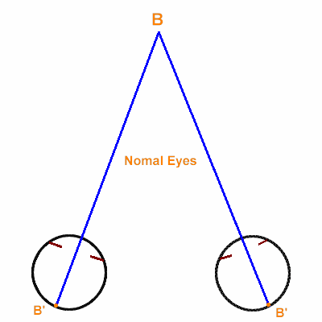

Anomalous Retinal Correspondence (ARC)
* Định nghĩa:
+ Tương ứng võng mạc bất thường
+ Một hình thức tương ứng võng mạc mà võng mạc trung tâm của một mắt kết hợp với một vùng ngoài trung tâm hoàng điểm của mắt kia để gia tăng cảm nhận lên một vật đơn độc. Hiện tượng này thường thấy ở bệnh lác, những có thể do bởi tổn thương hoàng điểm.
+ ARC thường được phân thành 3 loại:
Harmonious (hài hòa): khi góc bất thường là bằng với góc lệch khách quan. Điều này cho thấy rằng ARC tương ứng hoàn toàn với lác
Unharmonious (không hài hòa): khi góc bất thường ít hơn góc lệch khách quan.
Paradoxical (đảo ngược): khi mà góc bất thường lớn hơn góc lệch khách quan. ARC có thể được xác định bằng khám bằng amblyoscope, tét hậu ảnh hoặc so sánh góc lệch chủ quan và khách quan được đo bằng tét bịt mắt luân phiên hoặc đũa Maddox hoặc tét von Graefe.

Hình: Tương ứng võng mạc bất thường hài hòa (Harmonious ARC) giữa M'l mắt trái (bình thường) và B' (mắt phải lác trong, M'r là hoàng điểm mắt phải) góc bất thường beta là bằng với góc lác khách quan